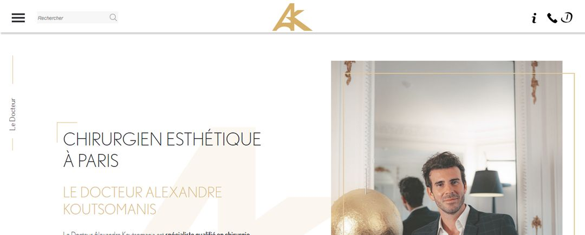

- Accueil
- Site internet
- Doctolib suffit-il
Guide · Doctolib et site
Doctolib suffit-il pour être visible quand on est chirurgien esthétique ?
Votre profil Doctolib sort sur Google et vos patientes y prennent rendez-vous. Faut-il encore un site ? Pour un chirurgien esthétique, Doctolib est un outil utile, mais il ne remplit pas le même rôle qu'un site. Voici ce que chacun apporte, et comment les faire travailler ensemble.
Mis à jour le · Réseau HANA
- Doctolib apporte la prise de rendez-vous en ligne et une visibilité sur votre nom. Le 3 novembre 2026, il sortait dans les quatre premiers résultats Google sur « chirurgien esthétique + ville » dans six grandes villes.
- Sa limite : votre profil est une page parmi celles de vos confrères, avec peu de place pour expliquer une intervention, et il ne vous appartient pas.
- Un site explique chaque intervention en détail et peut apparaître sur des recherches comme « rhinoplastie + ville + prix ».
- Le profil Doctolib, le site et la fiche Google doivent donner les mêmes informations : Google et les IA comme ChatGPT recoupent ces sources.
- Doctolib et un site ne s'opposent pas : l'un sert à réserver, l'autre à comprendre et à choisir.
Le constat
Doctolib est partout sur Google. Est-ce suffisant pour un chirurgien esthétique ?
Le 3 novembre 2026, nous avons relevé la page Google de « chirurgien esthétique + ville » dans six grandes villes françaises. Dans les six, Doctolib apparaissait dans les quatre premiers résultats, à côté de la carte Google Maps, d'un aperçu IA de Google et des sites de chirurgiens et de cliniques.
Il est donc logique de se demander si un bon profil Doctolib suffit. La réponse courte : il est utile, souvent indispensable pour la prise de rendez-vous, mais il ne fait pas le travail d'un site. Les deux répondent à deux moments différents du parcours d'une patiente.
- 01Elle se renseigne
Elle tape le nom d'une intervention, lit des explications, regarde les suites et les honoraires. Des semaines, parfois des mois.
- 02Elle choisit un chirurgien
Elle compare les parcours, les qualifications, les avis, la façon dont chacun explique sa pratique.
- 03Elle réserve
Une fois décidée, elle veut un créneau de consultation, simplement. C'est là que Doctolib intervient.
Les deux premières étapes se jouent surtout sur Google et sur votre site. La troisième, sur Doctolib ou par téléphone. Une patiente en chirurgie esthétique ne réserve pas une consultation comme elle prendrait un rendez-vous chez le généraliste : elle a besoin d'avoir compris avant.
Ce que Doctolib apporte
Ce que Doctolib fait bien pour un chirurgien.
- 01La prise de rendez-vous
La patiente réserve à toute heure, sans appeler le secrétariat. C'est le dernier pas, et Doctolib le rend simple.
- 02La visibilité sur votre nom
Une patiente qui tape votre nom tombe souvent sur votre profil. Elle y trouve l'adresse, l'accès et les créneaux.
- 03Une source connue
Un profil exact sur une plateforme de santé connue confirme vos informations : nom, spécialité, adresse.
Ses limites
Ce qu'un profil Doctolib ne fait pas à votre place.
Vous êtes un profil parmi vos confrères
Sur une recherche du type « chirurgien esthétique + ville », la page Doctolib qui s'affiche présente en général plusieurs praticiens. La patiente compare des profils au même format, côte à côte.
Peu de place pour expliquer
Une patiente qui envisage une rhinoplastie veut comprendre : indications, techniques, suites, éviction sociale, risques, honoraires. Un profil de prise de rendez-vous n'est pas fait pour développer tout cela, intervention par intervention.
Ce n'est pas votre propriété
La présentation, la mise en page et les règles d'affichage dépendent de la plateforme. Votre site, lui, vous appartient : vous décidez de ce qu'il dit et de la façon dont il le dit.
Les recherches par intervention
Les patientes tapent aussi « rhinoplastie + ville + prix », « blépharoplastie suites », « abdominoplastie après grossesse ». Pour apparaître sur ces recherches avec votre propre explication, il faut une page dédiée sur votre site.

Doctolib et site ensemble
Profil Doctolib et site : qui fait quoi.
| Besoin de la patiente | Profil Doctolib | Votre site |
|---|---|---|
| Vous trouver sur votre nom | Oui | Oui |
| Comprendre une intervention | Peu | Oui, une page par intervention |
| Connaître votre parcours et votre plateau technique | En résumé | En détail |
| Savoir comment se passent les suites | Rarement | Oui |
| Prendre rendez-vous | Oui, en ligne | Par un lien vers Doctolib |
| Vous trouver sur « intervention + ville » | Selon la recherche | Oui, si la page existe |
Le parcours le plus simple : la patiente découvre votre page d'intervention sur Google, la lit, puis clique sur « Prendre rendez-vous », qui mène à votre profil Doctolib. Ce que doit contenir chaque page est décrit sur notre page Site internet.
Google et les IA
Les mêmes informations partout.
Google et les IA comme ChatGPT, Gemini ou Perplexity ne regardent pas une seule source. Ils recoupent votre site, votre fiche Google, votre profil Doctolib, les annuaires de santé, la clinique où vous opérez. Selon une enquête Doctolib et Fondation Jean-Jaurès (mai 2026), 45 % des patients interrogés déclarent avoir utilisé une IA conversationnelle pour une question de santé au cours des trois derniers mois.
Si votre spécialité, votre adresse ou votre téléphone diffèrent d'une source à l'autre, ces outils hésitent, ou vous décrivent mal. Si tout concorde, votre profil Doctolib renforce votre site, et inversement. Nous expliquons ce mécanisme dans notre guide référencement ChatGPT.
À faire vous-même
Ce qu'il faut soigner sur votre profil Doctolib.
- Le nom écrit exactement comme sur votre site et votre fiche Google
- La spécialité : chirurgien plasticien, comme partout ailleurs
- L'adresse complète, avec étage et accès, identique aux autres sources
- Une photo professionnelle récente
- Une présentation claire de votre parcours et de vos qualifications
- Les actes que vous pratiquez réellement, avec les mêmes mots que sur votre site
- Les informations pratiques à jour : horaires, téléphone, lieux de consultation
- Le lien vers votre site, si la plateforme le permet
Vérifiez aussi votre fiche Google : c'est souvent elle que la patiente voit en premier, sur la carte, avant même Doctolib.
Si vous déléguez
Ce que nous faisons à côté de Doctolib.
Doctolib reste votre outil de prise de rendez-vous. Chez HANA, nous travaillons ce qui l'entoure, pour des chirurgiens plasticiens depuis près de dix ans : le site et ses pages d'interventions, le référencement Google, la fiche Google, la visibilité dans les IA, en veillant à ce que vos informations soient les mêmes partout, Doctolib compris. Un seul chirurgien plasticien par ville. Le détail est sur la page Tarifs.
Questions fréquentes
Les questions qui reviennent.
Doctolib suffit-il pour être visible sur Google ?
Il vous rend visible sur votre nom et sur certaines recherches générales, et il facilite la prise de rendez-vous. Pour les recherches par intervention, et pour expliquer votre pratique, un site reste nécessaire.
Un chirurgien esthétique a-t-il besoin d'un site s'il est sur Doctolib ?
Oui, dans la plupart des cas. Une patiente en chirurgie esthétique lit, compare et réfléchit longtemps avant de réserver. Le site répond à ses questions, Doctolib prend le rendez-vous.
Comment améliorer son référencement sur Doctolib ?
Nous ne connaissons pas le détail du classement interne de Doctolib. Ce qui est utile dans tous les cas : un profil complet et exact, une présentation claire, vos actes et vos informations pratiques à jour, et les mêmes informations que sur votre site et votre fiche Google.
Faut-il mettre un lien vers Doctolib sur son site ?
Oui, c'est pratique pour la patiente : elle lit la page d'intervention sur votre site, puis réserve en un clic. Vérifiez que le lien mène bien vers votre profil.
ChatGPT utilise-t-il Doctolib pour recommander un chirurgien ?
Les IA s'appuient sur des sources publiques variées, dont les plateformes de santé, les sites et les fiches Google. Personne ne sait exactement lesquelles elles retiennent pour chaque réponse. Des informations identiques partout augmentent les chances d'être bien décrit.
Puis-je garder mon profil Doctolib si je fais un site ?
Oui. Les deux se complètent : le site renvoie vers Doctolib pour réserver, et votre profil peut mentionner votre site, selon ce que la plateforme propose.
Pour aller plus loin
Ça pourrait vous intéresser.
Ma ville est-elle libre ?
Parlons de votre site.
Votre ville, votre nom, votre téléphone : c'est tout. Sous 48 h ouvrées, nous vous rappelons pour vous dire si votre ville est encore libre. Et nous vous offrons votre diagnostic de visibilité : où vous apparaissez sur dix recherches que font vos patient(e)s, l'état de votre fiche Google, et ce que ChatGPT et Gemini répondent aujourd'hui à quelqu'un qui cherche un chirurgien plasticien chez vous.
Ensuite, trente minutes en visio pour en parler. Nous vous montrons deux cas chiffrés et anonymisés, issus de projets que nous avons menés. Si c'est pertinent, nous vous faisons une proposition, ou un devis pour votre site. Sans engagement.
- 06 99 30 58 73Réseau HANA. Du lundi au vendredi, 9 h à 19 h.
- contact@hanahealth.frRéponse sous 24 h ouvrées.
- France, Belgique, SuisseRendez-vous en visio, où que vous soyez.